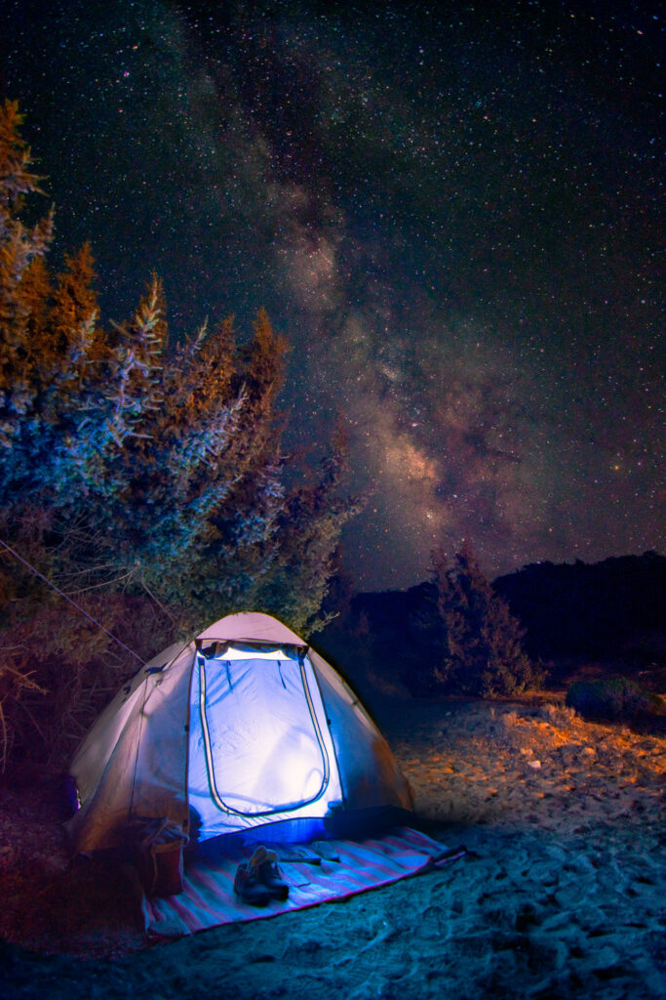

Best things to do in Gavdos

Camping and stargazing
Gavdos is a quiet and secluded island with just a few facilities. It is the perfect
spot if you love to immerse into nature, listening to the sounds of the wind and the sea. Stargazing is a
great activity in this island with only sparse electric light.Snorkeling in the Libyan Sea
The beaches in Gavdos are unspoiled with a stunning seabed waiting for you to
explore it. The waters are crystal-clear with beautiful underwater rock formations. You must bring all the
necessary equipment for snorkeling and diving along, since facilities are limited on Gavdos.Hiking and exploring the island
Walking and hiking is one of the best activities to on the remote island
of Gavdos. Multiple walking paths will lead you to discovering amazing beaches and beautiful landscapes with
cedar forests and pine trees. Since Gavdos has been inhabited since antiquity you will stumble upon ruins on
your way.
Go to Overview page